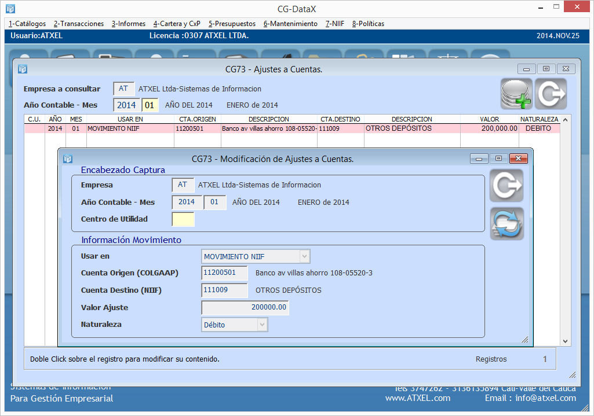

Nomrmas Internacionales de Información Financiera
Ahora  te ayudará con las NIIF
te ayudará con las NIIF
¿ Porque elegir ?
- Único software que permite generar su Balance de Adopción por primera vez bajo NIIF de forma automática.
- En una sola transacción bajo Norma Colombiana, obtenga los Estados de Situación Financiera bajo Norma NIIF.
- Cálculos automáticos en capturas de Inversiones (CDT´s, Cedulas de Capitalización, etc), cuenta con módulo en instrumentos financieros adecuado a la Norma NIIF para el cálculo de costo amortizado.
- Calculo automático del Deterioro, Importe amortizable.
- Determine el valor neto de realización de los inventarios.
- Controle el manejo de sus Activos Fijos como lo requiere la Norma NIIF, por componente y unidad generadora de efectivo.
- Genere sus estados de Información Financiera bajo la TAXONOMIA NIIF, y obtenga su formato XBRL para los órganos de control
¡RECUERDE!
- Para poner el software en marcha usted y su empresa deben conocer sobre las Normas Internacionales de Información Financiera.
- Ya deben tener implementadas sus políticas bajo NIIF.
- El software es la herramienta que le permitirá manejar las políticas establecidas por usted y su empresa a futuro bajo las NIIF.
A la vanguardia con los cambios normativos y tecnológicos.

Parámetros generales de NIIF.
Captura / Modificación / Retiro de Equivalencias.
Generación de saldos de apertura en cualquier momento del periodo contable
Captura de ajustes a cuentas en NIIF.

Capturas adicionales de información para generar el movimiento NIIF.
Generación de revelaciones a nivel de cuenta.
Consulta de movimiento de ajustes y reclasificaciones.
Balance de Apertura por pantalla.
Para conocer mas sobre el modulo de las NIIF Comunicate con Nostros, o clic aqui